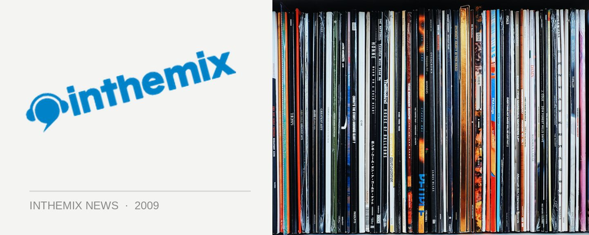

Lost Baggage slides off the conveyer belt
Lost Baggage was a party that fired up at the right place at the right time, kicking off in Sydney two years ago at the cusp of the explosion of the city’s underground techno scene, but it’s looking like its killer run is coming to an end. The two promoters responsible for putting on the events, Reckless Republic and Finely Tuned, have unceremoniously parted ways, with the online discussion between the two parties over the past few weeks suggesting the split was less than amicable.
“Lost Baggage has been dissolved due to irreconcilable differences between the organisers Reckless Republic and Finely Tuned,” it says in a statement from Reckless Republic, who recently shifted their famed after-hours weekly Spice from The Bunker to its new home of Kings Cross Hotel, again under circumstances that appeared less than harmonious.
However, both Reckless Republic and Finely Tuned are established and successful entities in their own right, which is reflected in the different projects they each have coming up. Reckless Republic have hooked up with Future Entertainment to help bring The Likes of You brand to Sydney, with their first party set for this Saturday September 12th at the Civic Underground featuring Audion AKA Matthew Dear.
Meanwhile, the spirit of Lost Baggage will live on under the ‘Finely Tuned’ banner, with a party on Sunday October 2nd at The Cross. Incidentally what was originally planned to be Lost Baggage’s 4th Birthday bash, the long weekend party will feature Robert Hood and Michael Cleis as special guests.